TokyoGirls.rb Meetup vol.1 開催レポート
初稿：2019-08-18
TokyoGirls.rbを開催しました！
はじめに
こんにちは！りほやん(@rllllho)とりさきゃん(@_risacan_)です。
2019年3月2日にTokyoGirls.rb Meetup vol.1というイベントを開催しました。
もともとは40名程度のイベントを想定していたのですが、最終的にはその倍近くの70名を超える方々に参加いただきました。 参加してくださったみなさん、どうもありがとうございました。
また、開催後に参加ブログを書いてくださった方々も、本当にありがとうございます。
今回はTokyoGirls.rb Meetup vol.1について、運営者目線も交えながらレポートします！

TL;DR
- 『女性が参加しやすい(でも女性限定ではない)勉強会』を開催し70名を超える参加者が来場しました。
- 託児所を利用されたエンジニアの方や女性男性を含め70名以上の方が参加されました
- 次回は12月下旬に開催予定です！
そもそもTokyoGirls.rbとは
TokyoGirls.rbは『女性が参加しやすい(でも女性限定ではない)勉強会』を目指して企画した勉強会です。
この取り組みは、最終的には開発の現場や勉強会における男性と女性の比率が同じくらいになることを目指しています。(同じような思いを持っておられるエンジニアさんは、男女を問わず、きっとたくさんいると思います)
現在、開発の現場や勉強会における女性の比率は1〜2割だと思います。 そうすると必然的に勉強会の参加率も男性の方が多くなり、女性が勉強会に参加するハードルが高くなってしまいます。 この状態のままだと女性の開発者が学ぶチャンスが減ってもったいないと、私たち運営スタッフは考えていました。
「面白そう、行ってみたいな」と思った勉強会には、性別の違いを気にすることなく、誰もが気軽に参加できるようになることが理想的です。 そこで、実際にそんな勉強会を開催して、世間の流れを変えていこう！と、そんな思いでTokyoGirls.rbは生まれました。
このイベント・取り組み自体が広がっていけば、女性も勉強会に参加しやすくなり、発信する人やコミュニティの輪が広がっていきます。 そして、最終的には開発の現場にも女性が増えて行くことにつながるはず！そんなふうに私たちは考えています。
開催のきっかけは昨年LAで行われたRuby Conf 2018
このイベントを企画するきっかけになったのは、昨年の11月にロサンゼルスで開催されたRubyConf 2018です。 このイベントには、私(りほやん)と運営スタッフの1人である伊藤淳一さん（@jnchito）が参加していました。
イベントのYouTube動画や写真を見ると気づかれるかもしれませんが、日本のカンファレンスと比較すると、参加者も登壇者も女性の比率が多く感じました。 おそらく女性の参加者は3割ぐらいいたんじゃないかと思います。
イベントのテーマや文化的な違いもあるので単純な比較はできないかもしれません。 ですが、それまで私たちはIT系のイベントや勉強会で女性の参加率が少ないのはある程度仕方がないことだと思っていたので、この事実はとても衝撃的でした。
私、りほやんはRubyConf 2018で初めて伊藤さんにお会いしたのですが、私も伊藤さんも「日本でも女性が当たり前のように勉強会やカンファレンスに参加できる状況にしたいね」という点で意気投合し、TokyoGirls.rbを開催することになりました。
ですので、TokyoGirls.rbが開催できたのはRubyConf 2018のおかげです。
ちなみに、TokyoGirls.rbは女性向けであることを明記しながらも、あえて女性限定ではなく、男性も参加できるイベントにしました。 これは「男性も参加することで、多様性を高めたい」という思いと、「男性エンジニアと女性エンジニアの相互理解を深めたい」という思いがあったためです。
当日のセッションの紹介
イベントでは4名の女性エンジニアに登壇していただきました。
去年の４月に初めてプログラミングを体験した私がエンジニアになってよかったと思うこと（かなきゃんさん）
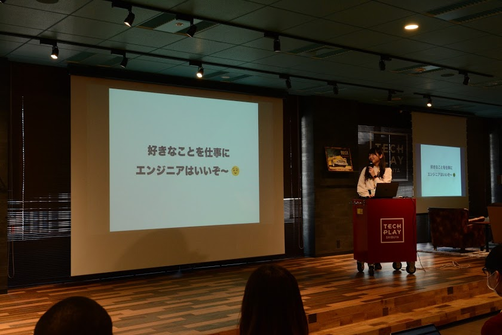
元アイドル兼携帯キャリアの販売員という経歴を持つ、かなきゃんによる「好きなことを仕事にする」というテーマのセッションでした。 彼女はアイドル時代に培ったあたって砕ける精神や、意外となんでもうまくいくという経験から、プログラミングの世界に飛び込み、エンジニアとして働きはじめたそうです。 彼女が心からエンジニアの仕事を楽しんでいることがよく伝わってくる、印象的なセッションでした。
参加者アンケートより抜粋
- エンジニアが楽しいっていう気持ちを思い出させてくれました。
- アイドルとして表に出ていた経験や、販売員としての提案経験など、これまでの知見を現在に活かしている点が素晴らしいと思いました。
システム障害との向き合い方（しなもんさん）

「エンジニア人生において、障害対応から学んだことが非常に多い」という、しなもんさんのセッションでした。 「分からなくても参加しよう」「先輩より早く原因特定するゲームだと思ってみよう」「障害対応を発信してみよう」など、新人エンジニアがうまく障害対応に潜り込むためのtipsや、一人で障害対応のストレスを溜め込まないようにするためのtipsが詰まった、とても実践的なセッションでした。
参加者アンケートより抜粋
- 1年目からベテラン勢に向けてまで、幅広く(かつ普遍的に)参考になるお話でした。
- 現場の生き生きとしたエピソードやその中での気づき・やり方などが具体的に紹介されて、参考になりました。
Rubyでプログラミングの楽しさを知ろう！（ようさん）
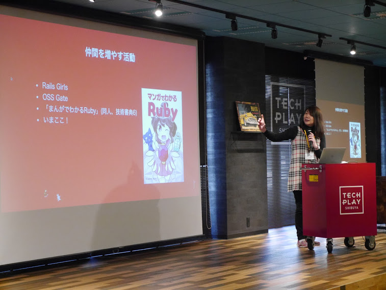
ようさんはRubyでできることをどんどん増やしていくための活動をされているエンジニアです。 彼女が携わっているプロジェクトには、Rubyで書いたコードをJavaScriptに変換するOpalや、Rubyを使ってデータ処理を行うRed Data Toolsなどがあります。 「Rubyには好きなところがありすぎて語りきれない！」とおっしゃるようさんが、ライブコーディングを交えつつ、Rubyの良さを語ってくれました。 また、最近Rubyを始めたエンジニアさん向けに、Rubyコミュニティの特徴やその素晴らしさについてもお話しいただきました。
参加者アンケートより抜粋
- Ruby愛が伝わってきました！
- 最初に勉強する言語にRubyを選んで良かったな〜という幸せな気持ちになれました。
チームの変化は私の変化！チームとともに成長する！（かとりえさん）

かとりえさんは育休を経て開発チームに復帰した女性エンジニアです。 このセッションでは、かとりえさんが開発チームに戻ったあと、エンジニアとして、またチームの一員として、どう成長できたかを発表していただきました。 スクラム開発にシフトした結果、プロダクトを総合的に捉えられるようになり、現在はリーダーとしてチームを牽引されているとのことです。
参加者アンケートより抜粋
- 物事を前向きにとらえることが変化していくチームでうまくやるコツなのかなとおもいました。
- 状況をどうとらえるか(危機ととるのかチャンスと取るのか)、口で言うのは簡単ですが、実践なさっているからこその今なんだな…！！と思いながら拝聴しました！！
開催してみて
イベント当日は大盛況で、いままでにない勉強会を作ることができたと思います。 セッションは開発が楽しくなるようなポジティブな気持ちになれる内容でとてもよかったです。 スポンサーLTもイベントを応援してくださる気持ちが伝わってきて嬉しかったです。 また力をいれた託児所とアンチボッチ懇親会も成功し、この勉強会を開催してよかったなと思えました。
 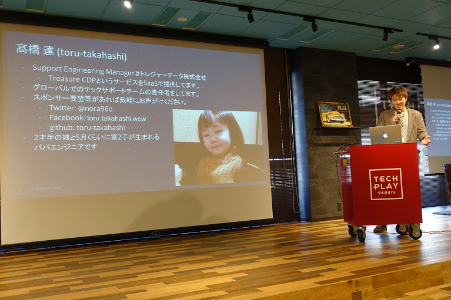
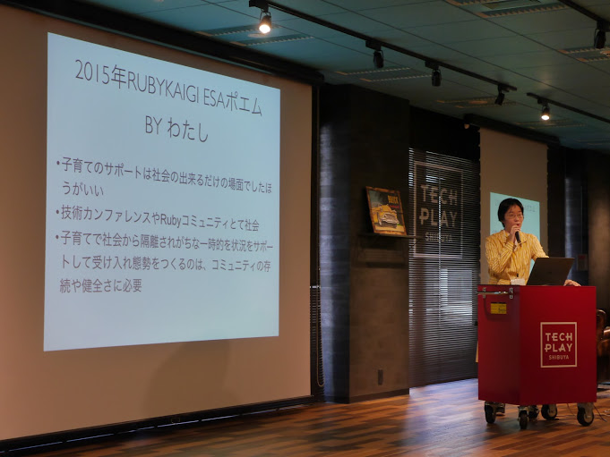
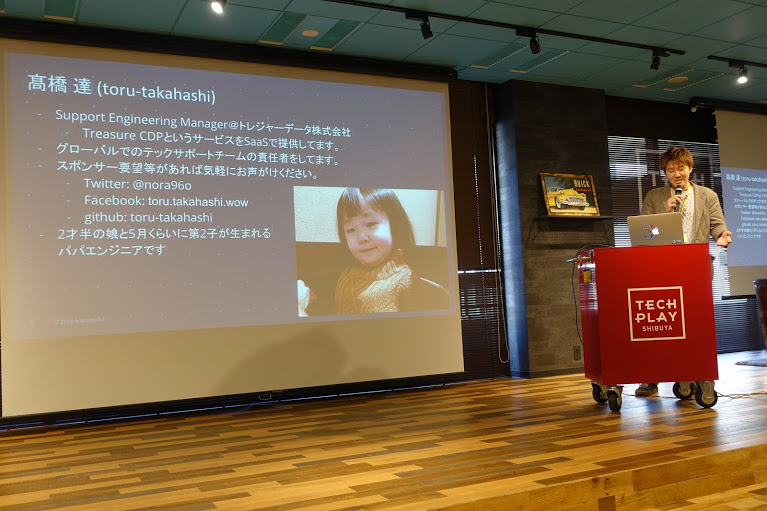
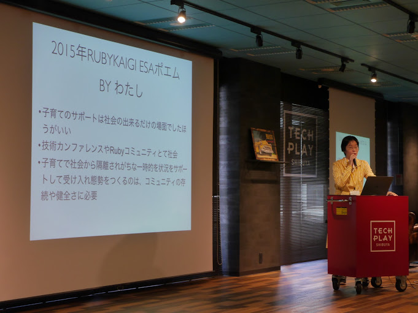
ツイートはこちらのtogetterにまとまっているので当日の雰囲気を知りたい方はご覧ください。 TokyoGirls.rb #1
託児所とアンチボッチ懇親会
ミートアップでは、託児所の設置とアンチボッチ懇親会という2つの取り組みを行いました。 TokyoGirls.rbでは、「面白そう、行ってみたいな」と思った勉強会には、性別の違いを気にすることなく、誰もが気軽に参加できるようになることが理想的である、と考えています。
現状の勉強会で参加しにくい要因を運営メンバーで考えた際に、以下の2点が大きく勉強会参加のモチベーションに影響しているのではないかという話になりました。
- 子供がいる女性エンジニアは勉強会に参加しづらい
- 懇親会が苦手
これらの問題を解決するために、子供がいるエンジニアも勉強会に参加しやすいように託児所の設置を、そして懇親会を楽しんでつながりを作ってもらうためにアンチボッチ懇親会を行いました。
託児所の設置について
託児所の設置に伴い大きく3つの懸念点がありました。
- 業者をどうするのか
- 場所をどうするのか
- 財源をどうするのか
業者については、今回はポピンズさんにお願いしました。 参加者の方の大事なお子さんを預かるため何社か慎重に検討した結果、他カンファレンスでも出張託児サービスを行っている実績があったポピンズさんにお願いしました。
場所については、当初は会場であるTECHPLAYの一部をパーテションで区切り託児スペースとできれば財源的にも一番良いのではないかという話が上がっていました。 会場内に託児所を設ける一番の懸念点は、同じ会場内であるため泣き声が気になったり、親御さんも気を遣って託児スペースに残ってしまうことがあるかもしれないことです。 託児サービスの業者さんと会場の下見にも同席していただきお話したところ、会場内での託児スペース設置自体は問題ないが子供の泣き声が心配という回答をいただきました。 そのため最終的に、イベント会場近くに子連れ可のレンタルスペースを借りて託児所にしました。
託児所を設置する上で一番の懸念は財源です。 今回TokyoGirls.rbでは、財源についてはスポンサーを募り協賛金を託児所の費用に当てました。 託児スタッフさんが1〜2名で対応できる範囲で業者さんに見積りを出していただいたところ、10万円前後とのことでした。 今回はこのイベントをスポンサードしてくださる方々のおかげで託児所の設置ができました。本当にありがとうございます。 しかし毎回10万前後の費用がかかるため託児所設置はハードルが高いという現状は問題として残っています。 この点については銀の弾丸のような解決策はまだないため、良い方法を探していきたいです。
などと懸念点があり大変な点もありましたが、実際に託児所設置してみて本当に良かったと思っています！ 託児所を利用された方からの反響がとても嬉しかったです。
 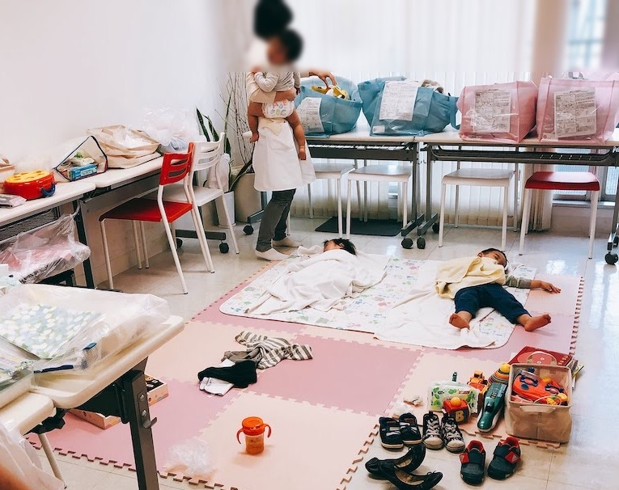
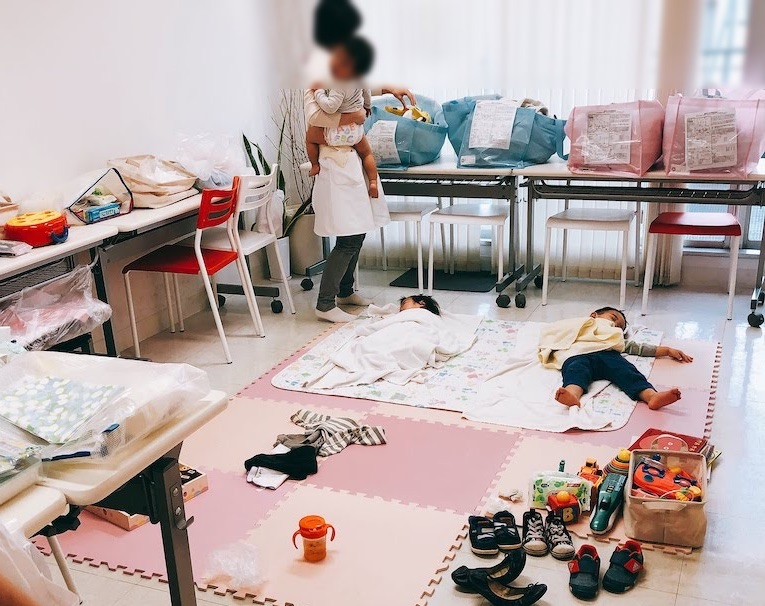
今日は #tokyogirlsrb に行ってきました。とても楽しいイベントで参加できて本当に良かった！託児室に心の底から感謝です🙏🙏✨ 普段引きこもりがちなのもあり良い刺激をたくさんもらいました。お母さん、頑張る気力が湧きました！！
— takopom (@takopom55) March 2, 2019
すごく元気とやる気を貰える会だったなぁー🥰 私も子育てにお仕事これからも頑張ろう。頑張りすぎない程度に💨 #tokyogirlsrb
— ちーすけ@16bit_idol (@16bit_idol) March 2, 2019
爆裂初心者なのに楽しみ尽くしてしまいました…ご用意頂いた託児所に子を迎えに行ったら、ここは楽しいので帰りたくないって態度された(｀；ω；´) #tokyogirlsrb
— アユミトラ/WEBエンジニア志望/妊娠23w (@ayumitora00) March 2, 2019
自分が近い将来子供をもつようになったときに勉強会に参加することは難しくなってしまうことは嫌だなあと思っていたので、 開催する側として大きなカンファレンスでなくとも託児所設置ができるということを実感できたことは大きな学びでした。 今回の託児所の知見はこちらの記事にまとまっているので、託児所設置を検討しているイベント主催者の方がいらっしゃいましたらぜひご参考にしていただきたいです。 知見がたまっていくことで勉強会の託児所設置のハードルが低くなっていくといいなと思っています。
アンチボッチ懇親会
アンチボッチ懇親会というのは、「ひとりぼっちの懇親会」を避けるために参加者を半強制的にグルーピングするというものです。 勉強会に参加している身として、初対面の人が多い懇親会でひとりぼっちになってしまう経験が多くあります。 せっかく懇親会にまで参加してもらった参加者の方には懇親会を楽しんでほしいと考えてアンチボッチ懇親会を行いました。
アンチボッチ懇親会では以下の3つの施策を行いました。
- ある条件でグルーピングして、まずはそのグループ内で話してもらう
- 会話のきっかけを作る会話テンプレートを提供する
- ほとんどの人は自分のことをコミュ障だと思っていることを理解してもらう
今回グルーピングには、普段愛用しているエディタで分かれてもらいました。 また会話のテンプレートスライドを用意し、懇親会中は会場のスクリーンに表示しました。
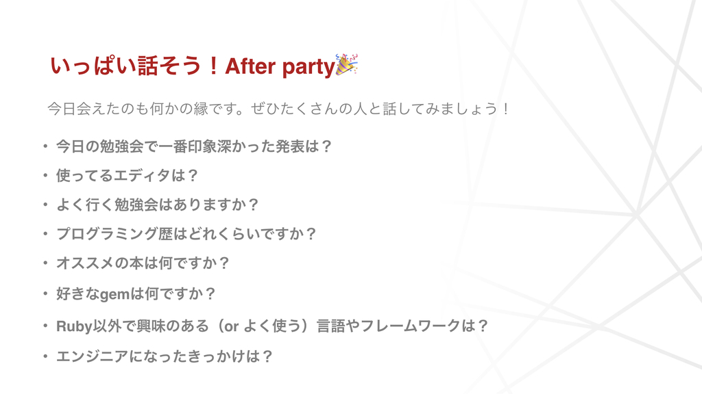
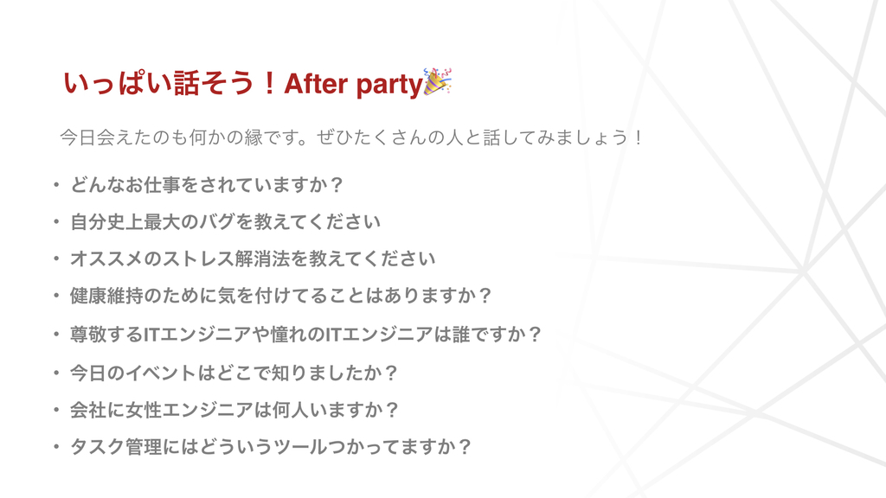
いろいろと運営側で準備はしたのですが、実際どうなるかは当日までわからないため不安な部分もありました。 そのため運営側で臨機応変にぼっちの人をみつけたら話しかけに行こうという話を事前にしていたのですが、懇親会は運営がすることがないくらいみなさん楽しそうに話されていていました。 想定以上にみなさんが楽しそうに話されている姿やツイートをみてとても嬉しくなりました。
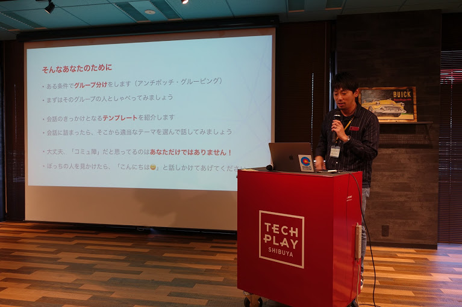 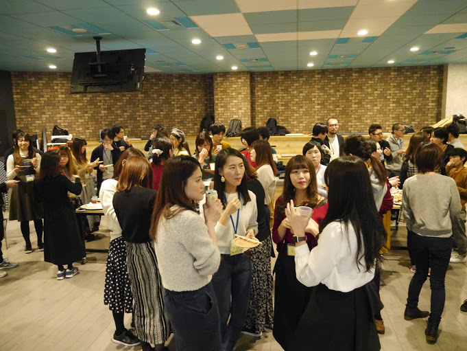
「みんなコミュ障だから」「アンチぼっち」という伊藤さんの言葉がとても胸に響きました!!
— だなん＠駆け出しエンジニア (@danan0629) March 2, 2019
男性が多い勉強会に参加すると懇親会の居場所に困り、逃げるように帰っていた私。今日は初めて最後までいれました！感謝です（ ; ; ）#tokyogirlsrb
Rubyのお話から開発・運用のお話、エンジニア楽しい…！というお話に、コミュニティやRubyKaigiのお話まで、登壇者陣の熱い発表を聞くことができただけでなく、参加者全員が安心して楽しめる工夫が随所に光る良いイベントでした…❤#tokyogirlsrb
— しおい🍪Web開発2年目🎂 (@coe401_) March 2, 2019
あと終了後にRailsdm勢とまったりお茶しました🍵
グルーピングも最初はグループで喋ってもらいますが、途中から移動はもちろん自由にしています。 アンチボッチ懇親会はとても参加者の満足度も高く、運営側としてもやってよかったと思える施策です。 グルーピングと会話テンプレートを用意するだけでやってみるハードルも低いので、イベント主催する際は、ぜひ一度やってみていただきたいです。
まとめ
TokyoGirls.rbでは 『女性が参加しやすい(でも女性限定ではない)勉強会』を開催しました！ 参加者のみなさん、登壇者のみなさん、スポンサーしてくださった方々のおかげで今までにない勉強会にできたと思います。 本当にありがとうございました！ 参加された方々が、もっと他の勉強会にも参加したいなと思っていただけていたら嬉しいです。
TokyoGirls.rbでは次回の勉強会を企画しており、12月開催を予定しています。 ぜひご参加いただけますと幸いです！
あわせて読みたい
運営スタッフの伊藤さんもご自身のブログでこのイベントの内容を詳しく紹介しています。 こちらもぜひご覧ください。
- 男女の参加バランスが良く、託児室があって、懇親会でぼっちにならないRuby勉強会を開催しました #tokyogirlsrb - give IT a try
- 託児室付きのIT勉強会を開催したので、僕の知見を全部書き出します #tokyogirlsrb
また当日のセッションをログミーさんに掲載していただきました。 こちらもぜひご覧ください。
- 彼女はなぜ、アイドルからエンジニアになったのか？ “好きなことを仕事に”する、元アイドルの軌跡 Part1
- 彼女はなぜ、アイドルからエンジニアになったのか？ “好きなことを仕事に”する、元アイドルの軌跡 Part2
- 障害対応、どう学ぶ？システム障害との向き合い方 Part1
- 障害対応、どう学ぶ？システム障害との向き合い方 Part2
- Rubyでプログラミングの楽しさを知ろう 言語の特徴と魅力について Part1
- Rubyでプログラミングの楽しさを知ろう 言語の特徴と魅力について Part2
- チームの変化は成長のチャンス 育休復帰したエンジニアが考える、チーム開発とキャリアのこと
著者について
りほ (@rllllho)
9月に東京から大阪に移住予定のエンジニア。 漫画とビールとご飯がすきです。
りさきゃん (@_risacan_)
株式会社SmartHRのエンジニア。絵文字と柴犬とお絵かきが好き Yak Shaving Tシャツ発売中 !!